|
|
| sea anemones text index | photo index |
| Phylum Cnidaria > Class Anthozoa > Subclass Zoantharia/Hexacorallia > Order Actiniaria |
| Snail-hitching
anemone Paraiptasia radiata Family Aiptasiidae updated Dec 2024 Where seen? This tiny anemone is sometimes seen stuck onto shells occupied by living snails such as whelks (Family Nassaridae). Sometimes also seen attached to tiny stones in silty sandy shores. They are more frequently encountered on our Northern shores, but also sometimes seen on other shores. Features: Diameter with tentacles extended 1-1.5cm. Tentacles many, long and thin, usually transparent with white bands. On the oral disk, often fine white stripes radiating from the mouth. Sometimes, a pair of tentacles are of a contrasting colour so that the anemone appears to have a moustache. Body column brown with pale stripes. Sometimes, a single single shell may bear two or three of these anemones. When full expanded, these anemone hitch-hikers may be bigger than the snail they are riding on! There are also small anemones that hitch a ride on a shell occupied by a hermit crab. Status and threats: As at 2024, it is assessed not to be approaching the criteria for being listed among the threatened animals in Singapore. |
|
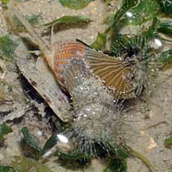 Pulau Sekudu, May 08 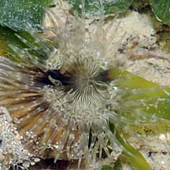 |
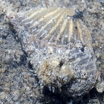 Chek Jawa, Jul 11 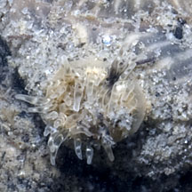 |
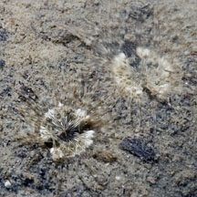 Anemones stick out when snail is buried. Chek Jawa, Jul 11 |
|
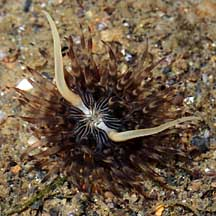 Woodlands, Jul 08 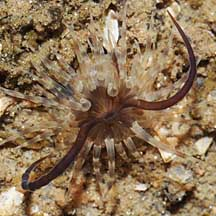 Woodlands, Jul 08 |
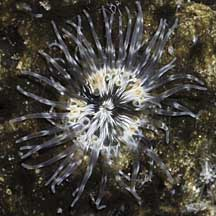 Kranji, Jul 09 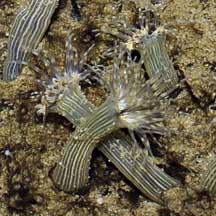 |
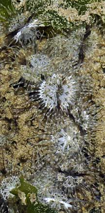 Not attached to snails. Kranji, Jul 09 |
*Species are difficult to positively identify without close examination.
On this website, they are grouped by external features for convenience of display.
| Snail-hitching anemones on Singapore shores |
On wildsingapore
flickr
|
| Other sightings on Singapore shores |

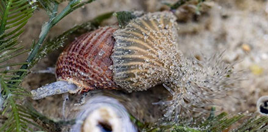 Coney Island, Oct 26 Photo shared by Rui Quan Oh on facebook. |
Kranji, Mar 17
|
Links
References
|